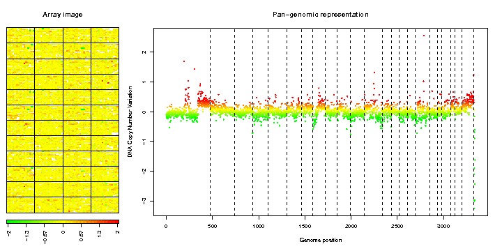

| Profile after normalization: 3227 clones (97%) | ||||
| "> |
| Flag label | Flag code | Parameter | Flagged spots | Flagged spots(%) |
|---|---|---|---|---|
| Local bias | S | - | 0 | 0 |
| Image analysis | G | - | 61 | 1 |
| Low signal to noise ratio | B | 3 | 0 | 0 |
| Bad quality clone | V | 2 | 204 | 2 |
| No genome position | P | - | 0 | 0 |
| Unique spot | U | - | 1 | 0 |
| Amplicon | A | 1 | 0 | 0 |
| Poor replicate consistency | E | 0.1 | 545 | 5 |
| not flagged | OK | - | 9989 | 92 |
| Label | Value |
|---|---|
| Local signal variability along the genome | 0.032 |
| Average variability among replicates | 0.05 |
| Dynamics of the DNA copy number variation | 0.294 |